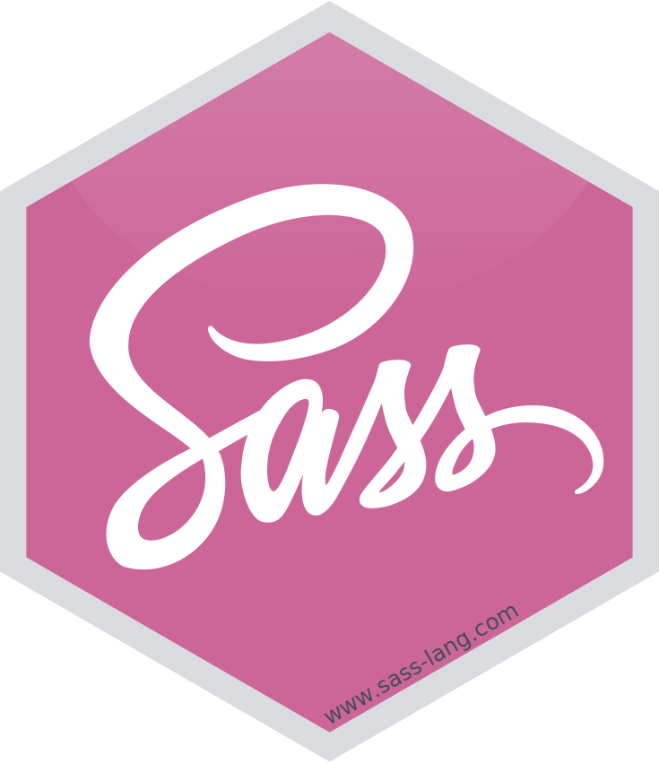

sass 
The sass R package provides bindings to LibSass, a fast Sass compiler written in C++. Sass is a mature and stable CSS extension language that makes styling modern websites less complex and more composible.
Installation
Install the released version of sass from CRAN:
install.packages("sass")Install the latest development build from GitHub:
# install.packages("remotes")
remotes::install_github("rstudio/sass")Basic usage
To compile Sass into CSS, provide Sass to the input argument of the sass() function. input can be any of the following:
- An R string (as in the example below).
- A named
list()defining Sass variables. - A
sass_file(),sass_import(), orsass_layer(). - A nested
list()comprising of all the above.
Learn more
See sass’s overview vignette as well as the official Sass documentation.